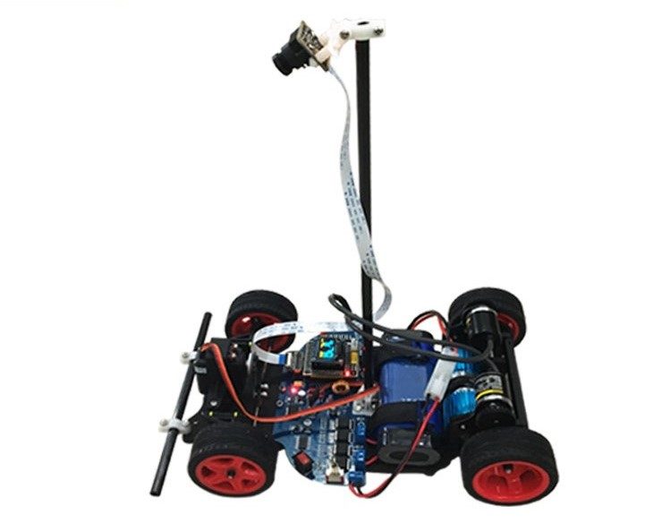

一张图足以概括大学的三年时光

自己车的视频找不到了，找到了当时做的一个对比视频，都是那时的明星车队
前后由来
11年，高考下雨了，结果并不理想。选学校和专业全都是自己做主，宗旨没见过海，要找一个离海边近的学校，就这样阴差阳错地读了一个文科学校（就在海边）的理工科专业（感兴趣）
匆匆四年
时间是真的经不起回忆，第一次见到海还是很高兴的，记得当时学校的车来火车站接人，跟着举牌子的学姐就上了客车，车站在市里并没能马上见到海。客车沿着路跑，上坡又下坡。第一感觉就是跟我大平原不一样。突然转过一个弯，豁然开朗大海就那么扑进眼里。那时的我还没有想到，接下来的将是四年的海景房，起床站在阳台就能看到大海 :)
幸运的是碰到一群有共同爱好的同学，一个好的工作室，一起学习成长的三年就是上面的那张图，过程就不再描述了，就是兴趣驱使下的死磕。有得也有失
各奔前程
山东人是真喜欢喝酒，大学最后一年，还没毕业就有点心痒，拿着车票就来了北京...